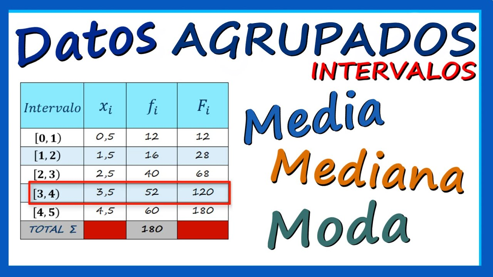

Medidas de Tendencia Central
Las medidas de tendencia central son herramientas fundamentales en las estadísticas descriptivas que nos ayudan a entender el punto central de un conjunto de datos. Las tres principales medidas de tendencia central son la media, la mediana y la moda. La media es el promedio de todos los valores en el conjunto de datos, mientras que la mediana es el valor que se encuentra en el medio de un conjunto de datos ordenado. La moda es el valor que ocurre con mayor frecuencia. Cada una de estas medidas ofrece una perspectiva diferente sobre el centro de los datos y puede ser útil en diferentes contextos.
